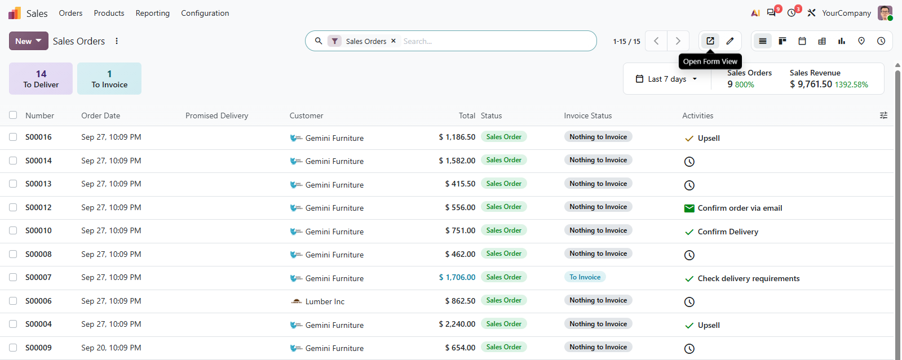
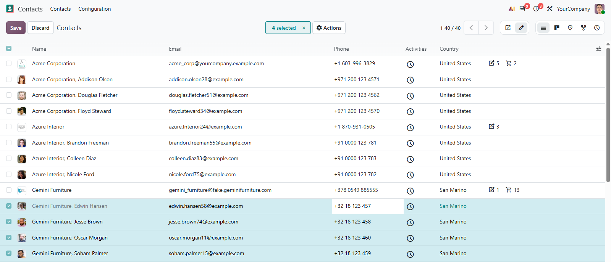

A switch beside the pager decides what a click on a row does: open the record in its form, as Odoo always has, or edit it right there in the list — several rows at once, if you select them.
Open Form View keeps the list a list: a click on a row opens the record in its full form.
Inline Edit Mode turns the row into fields, and one change can reach every selected row.
The choice is remembered per user and per list, so each one opens the way you left it.

Nothing to configure and nothing new to learn. The switch shows up on every list you are allowed to edit, next to the arrows you already use.
A click on a row opens the record in its form, with the breadcrumb back to the list. The way Odoo lists work out of the box.
A click on a cell edits it in place. New rows are added at the top or the bottom, wherever the view puts them.
The mode is kept per user, action and model. Edit your price lists inline and still open orders in the form.
Without the right to edit, or on a read-only list, the switch does not appear. Access rights stay exactly as they are.

In Inline Edit Mode the list works like a sheet: click a cell, type, move on with Tab, and the row is saved when you leave it. Tick several rows first and the value you enter is written to all of them, after Odoo asks you to confirm.
Lists inside a dialog and lists on a phone keep their usual behaviour, and the switch stays hidden there.
What you get for free, and what has to be paid work.
Issues and merge requests are welcome on the public repository. They are read — but no response time is promised.
Another mode for the switch, a default per list, or a fix on a deadline is paid work — quoted up front. Write to sale@mukit.at.
LGPL-3. Use it, change it, ship it inside your own work — no licence key, no database count.
Modules written for your process, on your Odoo version.
Odoo joined up with the systems you already run.
Hosting, deployment and upgrades you do not have to watch.
Your team taught the parts of Odoo they actually use.
An agreement, so an answer does not depend on who is free.
Odoo.sh or on-premise, Community or Enterprise.
None. The switch appears on every list the user is allowed to edit.
Depends on web only, nothing external.
Pick Open Form View or Inline Edit Mode in the button group beside the pager.
The chosen mode lives in the browser, so an upgrade has nothing to migrate.
MuK IT GmbH, Vienna. Author and maintainer.
Tell us which lists your teams work through by hand, and we will tell you where editing in the row is enough and where a wizard saves the day. MuK IT — Austrian Odoo partner, Vienna.